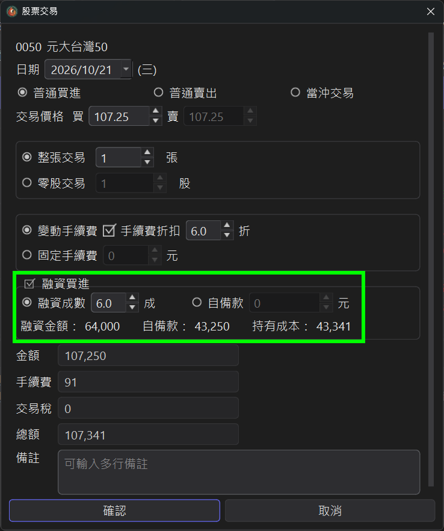
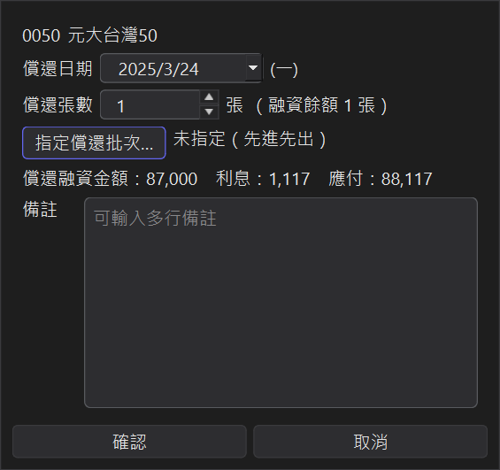
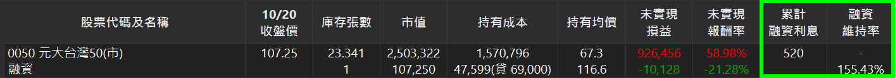
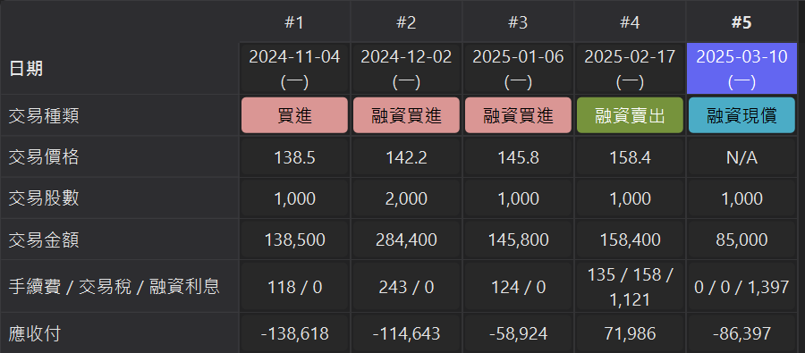
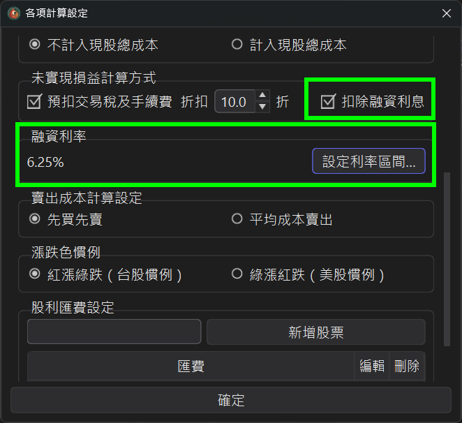

融資交易記帳 v3.6.0 新增
有在使用融資的投資人，以往只能把融資當成一般買進來記，借款、利息、維持率都要另外自己算。
StockKeeper 現在可以完整記錄融資買進、融資賣出與融資現償，
自動計算融資利息與維持率，損益與報酬率也會反映槓桿的真實結果。
● 融資為台股專屬功能，美股帳戶不會顯示融資相關選項。
1、融資買進
新增一筆普通買進時，勾選下方的「融資買進」，再選擇輸入方式：
● 融資成數：例如 6 成，程式依成交價金算出融資金額（以千元為單位無條件捨去）。
● 自備款：直接輸入自備款金額，其餘為融資金額。
下方會即時顯示融資金額、自備款與持有成本。

● 零股交易不可使用融資。
2、融資賣出
新增普通賣出時勾選「融資賣出」。程式會依先買先賣扣除融資部位，並自動計算：
● 償還融資金額：這次賣出的股數對應的借款。
● 融資利息：從買進交割日算到賣出交割日。
● 應收付：賣出淨額 − 償還融資 − 融資利息，和券商交割金額一致。
3、融資現償
不賣股票、直接用現金還清融資時，點主畫面下方的「新增融資現償紀錄」。 還清後，那批股票會轉為現股，利息計入現股的持有成本。

● 以張為單位輸入償還張數，視窗會即時顯示償還融資金額、利息與應付金額。
● 點「指定償還批次」可以挑要還哪幾批；沒有指定的部分依先進先出償還。
4、利息與維持率一目了然
有融資的股票，總表會用一列兩行分別顯示「現股 / 融資」的庫存、持有成本、均價、損益與損益平衡價。 持有成本後面的「貸」是目前的融資借款金額。
上方摘要會顯示累計融資利息與整戶維持率，並提示距離追繳還能再跌多少； 總表的「融資維持率」欄則顯示每一檔各自的維持率（欄位較多時可左右捲動查看）。

交易明細中，融資賣出與融資現償的利息會顯示在「手續費 / 交易稅 / 融資利息」欄的第三段。

5、融資利息怎麼算？
● 利息 ＝ 融資金額 × 年利率 ÷ 365 × 天數，四捨五入到元。
● 天數從買進交割日（T+2）起算，算頭不算尾；推算交割日時會自動跳過台股休市日。
● 融資現償時，在交割日當天就還款也會收 1 天利息。
6、融資利率可設時間區間
在「各項計算設定」的「融資利率」區塊點「設定利率區間」， 可以依時間區間設定不同的年利率。券商調整利率時，利息會依各區間分段計算。
同一個視窗的「未實現損益計算方式」也可以勾選「扣除融資利息」（預設勾選），讓帳面損益更接近實際出場的結果。

7、匯入對帳單
匯入券商對帳單時也支援融資買進 / 融資賣出，融資的部分可以用「融資成數」或「融資金額」欄位對應。 操作方式請見教學：如何匯入Excel對帳單。